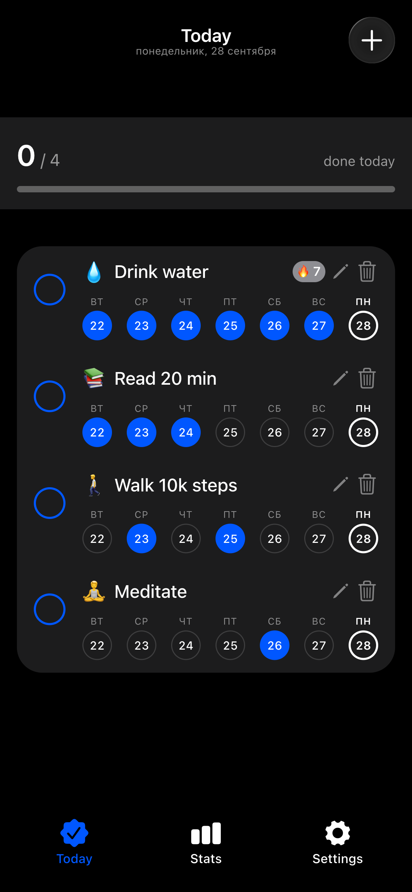
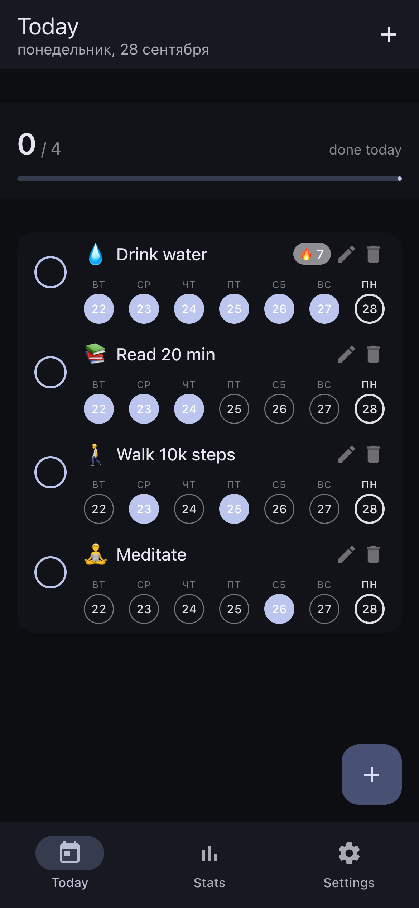
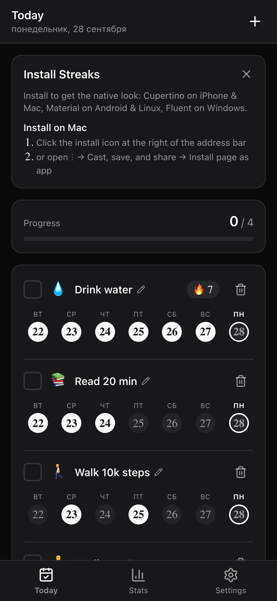
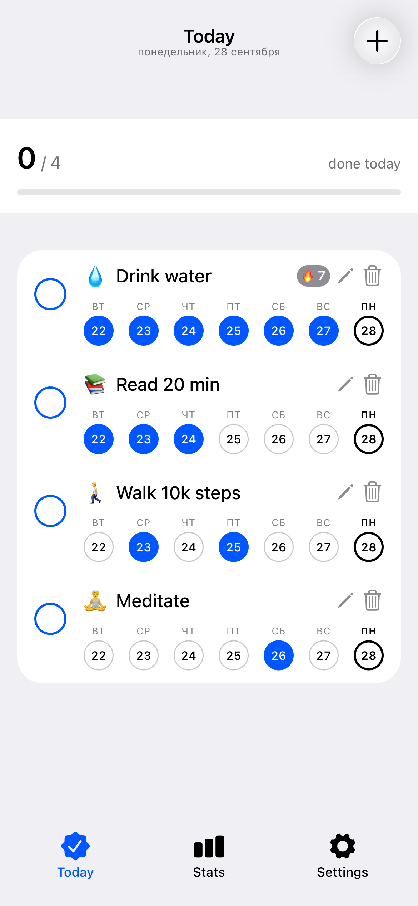

A synthetic case showing that a progressive web app today can be indistinguishable from a native mobile or desktop application — including the UI itself.
Installable Offline Per-platform native UI


The UI kit is chosen at runtime: detected for installed PWAs, forceable via ?design=… for previews.
Cupertino · iOS / macOS
Material · Android / Linux

Web kit · browser tab

Light & dark · every kit
Pure reducer, versioned localStorage persistence, streak & progress selectors. Zero UI imports, fully unit-tested (80 tests).
Detects OS, browser, display mode and install status; resolves the design system (override → installed → web) and owns the install prompt store.
vite-plugin-pwa: manifest, auto-updating service worker, per-kit lazy chunks, offline precache.
Framework7 9 — one shell, two native languages (theme="ios" / "md"), F7 icons, swipe actions, FAB, system dialogs.
@fluentui/react-components v9 — real Fluent widgets, CSS-in-JS design tokens, TabList navigation, dark theme from the OS.
Own Flutter-style widget kit — inline styles from a single theme file (theme.jsx), no CSS frameworks at all.
Own icon on the home screen or dock, opens in a standalone window — no browser chrome, no store.
Service worker precaches the whole build — flip on airplane mode and cold-start it.
FAB and pill tabs on Android, circular checks and swipe-to-delete on iOS, TabList on Windows.
Tap-to-complete, per-day toggling, native-style dialogs and confirmations, confetti on a perfect day.
Dark and light themes, safe-area insets for notches and home bars, locale-aware dates.
The auto-updating service worker ships the next version on the next launch — no review queue.
| This experiment (PWA) | Native binary | |
|---|---|---|
| Distribution | A URL — no store, no review | App store submission & review |
| Updates | Instant, on next load (autoUpdate SW) | Release cycle + user update |
| UI quality | Platform UI kits per OS | Platform UI kits |
| Offline | Precached app shell + data | Full offline |
| Deep OS access | Moderate — web APIs only | Full platform access |
| Codebase | One for every platform | Per-platform (Swift/Kotlin/…) |
Honest scope: a PWA is not a replacement for apps that need deep OS integration — it is a serious answer for everything else.
Open it in a browser tab for the web look — then install it and watch the UI switch to your platform’s native kit.
github.com/nikitafedorov008/NativePWAExperiment